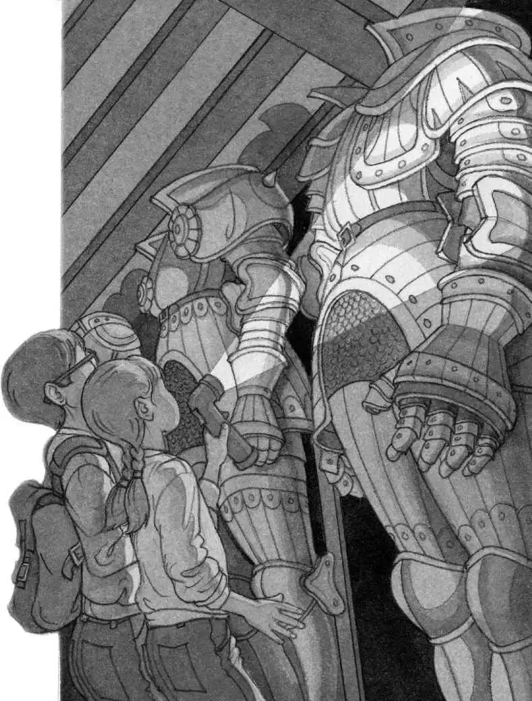
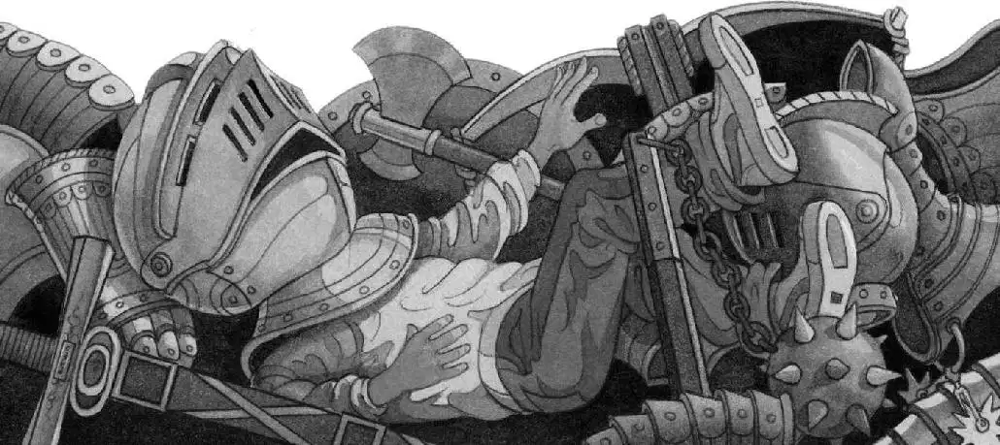

“Come on!” cried Annie. “Hurry!”
Jack raced behind her.
“Here! Quick!” Annie dashed toward a door off the hallway. She pushed the door open. Jack and Annie stumbled into a dark, cold room. The door creaked shut behind them.
“Give me the flashlight,” said Annie. Jack handed it to her, and she switched it on.
“Yikes!” said Annie. A row of knights was right in front of them!

Annie flicked off the light.
Silence.
“They aren’t moving,” Jack whispered.
Annie switched the light back on.
“They’re just suits,” Jack said.
“Without heads,” said Annie.
“Let me have the flashlight for a second,” said Jack. “So I can look in the book.”
Annie handed Jack the flashlight. He pulled out the castle book. He flipped through the pages until he found what he was looking for.
Jack put the book away. “It’s called the armory,” he said. “It’s where armor and weapons are stored.”
He shined the flashlight around the room.
“Oh, man,” whispered Jack.
The light fell on shiny breastplates, leg plates, and arm plates. Shelves were filled with helmets and weapons. Shields, spears, swords, crossbows, clubs, and battle-axes hung on the walls.
Voices came from the hallway.
“Let’s hide!” said Annie.
“Wait,” said Jack. “I’ve got to check on something first.”
“Hurry,” said Annie.
“It’ll take just a second,” said Jack. “Hold this.” He handed Annie the flashlight.
He tried to lift a helmet from a shelf. It was too heavy.
He bent down and dragged the helmet over his head. The visor slammed shut.
Oh, man, thought Jack. This is worse than having a five-year-old on my head. It’s like having a ten-year-old on my head!
Not only could Jack not lift his head, he couldn’t see anything, either.
“Jack!” Annie sounded far away. “They’re getting closer!”
“Turn off the flashlight!” Jack’s voice echoed inside the metal helmet.
He struggled to get the helmet off.
Suddenly he lost his balance and went crashing into other pieces of armor. Metal plates and weapons clattered to the floor.

Jack lay on the floor in the dark. He tried to get up. But his head was too heavy.
He heard deep voices.
Someone grabbed him by the arm. The next thing he knew, his helmet was yanked off. He was staring into the fiery light of a torch.